Effet du dédoublement des classes de CP/CE1 en éducation prioritaire sur les performances scolaires, suivi à court terme (CP/CE1), moyen terme (CM1/CM2) et long terme (entrée en 6e). Les données utilisées sont simulées de manière reproductible (seed fixe) : les résultats illustrent la démarche méthodologique et ne constituent pas des statistiques officielles.
Dépôt GitHub Dashboard interactif (Streamlit)
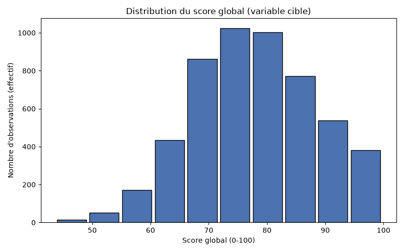
05_distribution_variable_cible.png
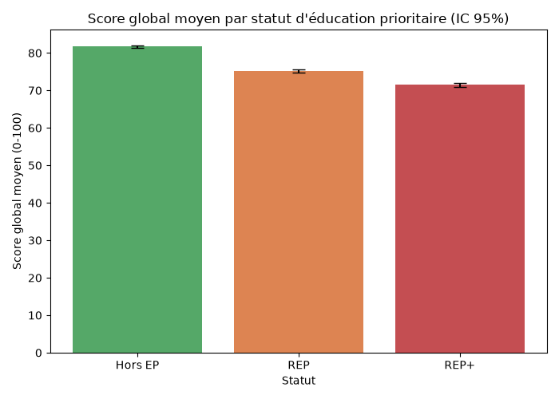
05_moyenne_par_statut.png
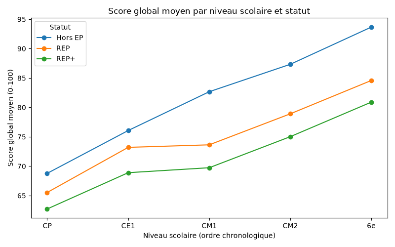
05_score_par_niveau_statut.png
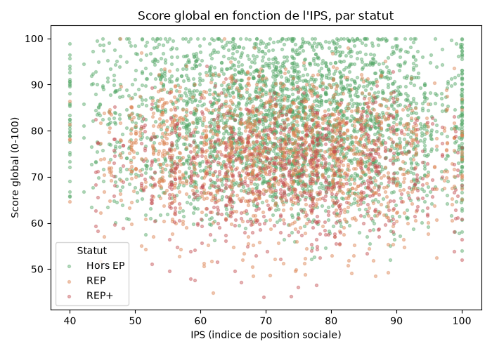
05_score_vs_ips.png
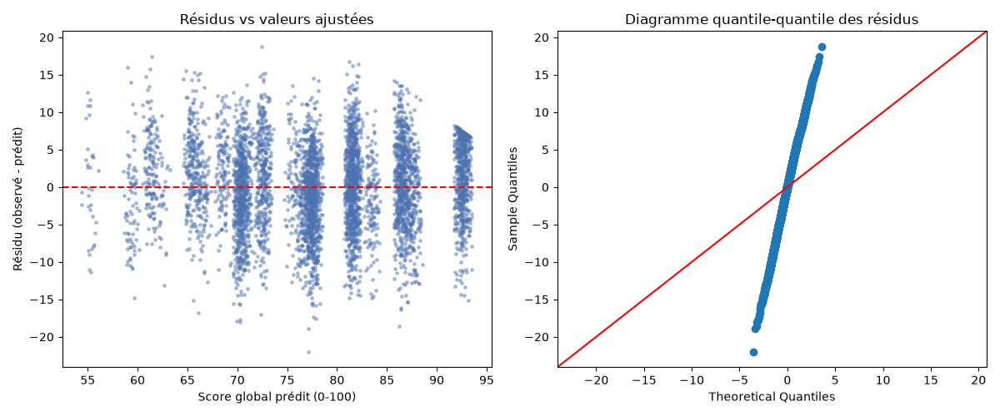
06_diagnostics_ols.png
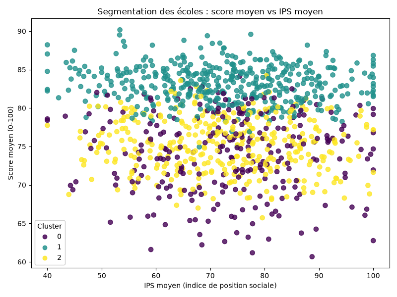
07_segmentation_ecoles.png
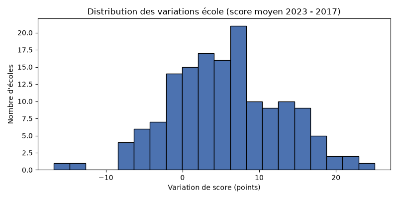
08_distribution_delta_ecoles.png
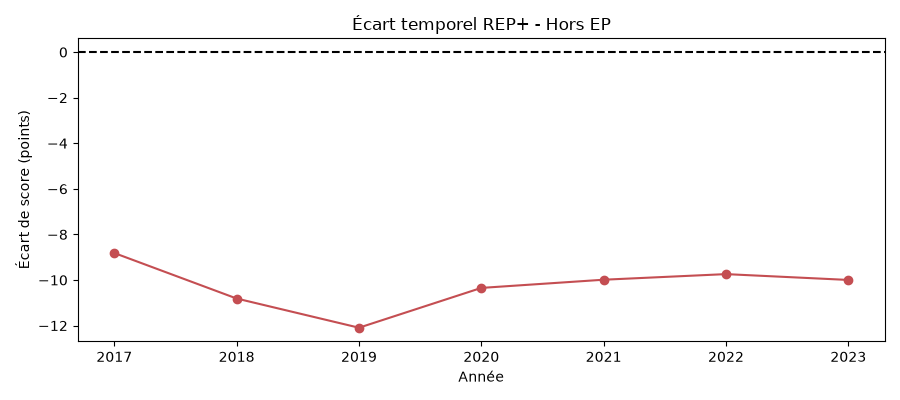
08_ecart_repplus_horsep_temps.png
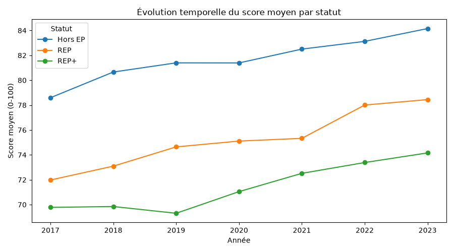
08_tendance_temporelle_statut.png
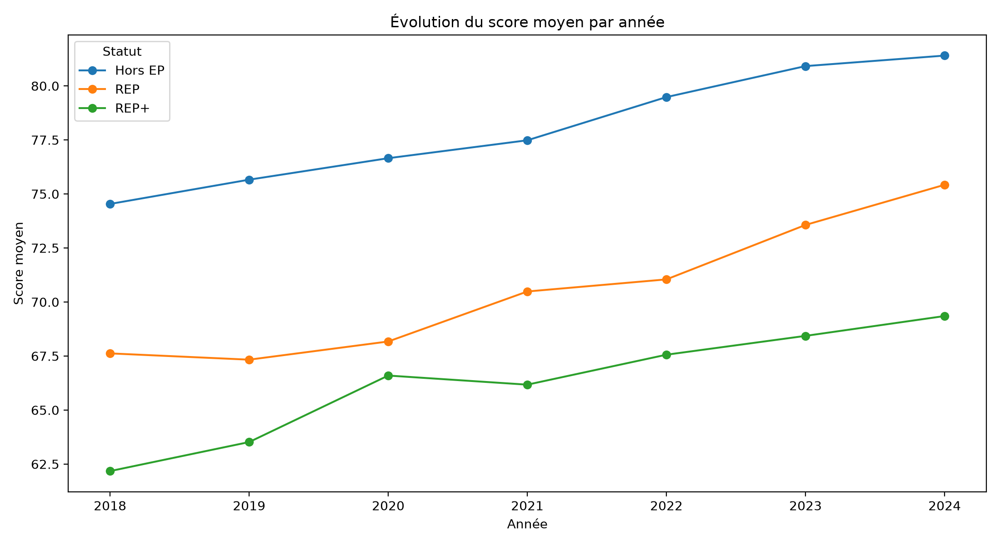
score_par_annee.png
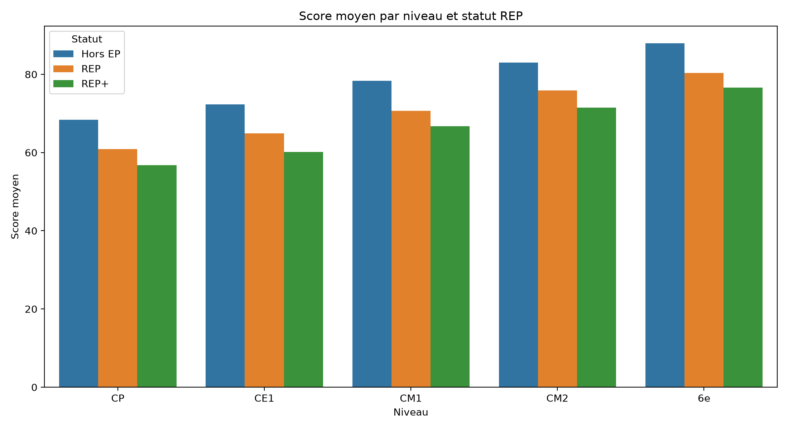
score_par_groupe.png
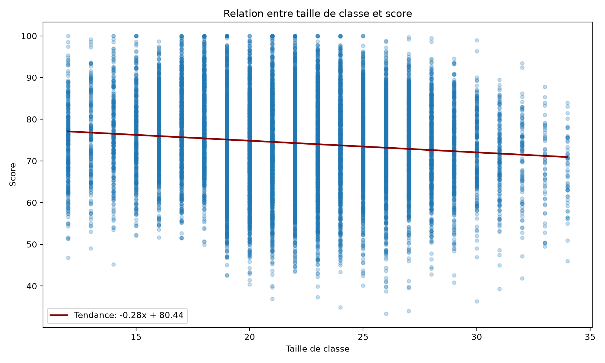
score_par_taille_classe.png